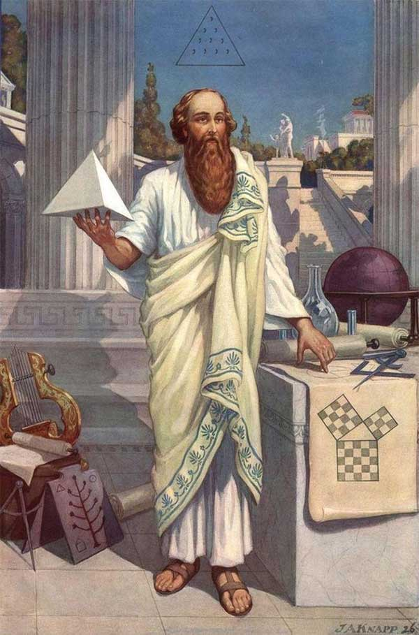

06.
Giờ sẽ là lúc chúng ta cùng nghĩ về câu hỏi thứ nhất mà tôi đưa ra ở mục 3, câu hỏi khó hơn nhiều so với câu thứ hai. Liệu toán học, toán học theo đúng nghĩa tôi và những nhà toán học khác vẫn quan niệm, có đáng để nghiên cứu, và nếu như vậy thì tại sao?
Tôi đã xem lại những trang đầu trong bài giảng đầu tiên của tôi ở Oxford vào năm 1920, trong đó có một chút tóm lược cho một lời xin lỗi cho toán học. Nó không thỏa đáng lắm (chỉ một vài trang), và được viết theo kiểu mà tôi không mấy tự hào (tôi nghĩ, nó như một bài luận đầu tiên mà tôi cho là “văn phong” của Oxford); nhưng tôi vẫn cảm thấy rằng, dù có phát triển thế nào đi nữa, thì nó cũng chứa đựng những phần thiết yếu của vấn đề. Tôi sẽ đề cập lại ở đây, coi như là mở đầu cho một cuộc thảo luận hoàn chỉnh.
- Tôi bắt đầu bằng việc nhấn mạnh tính vô hại của toán học - ‘’việc nghiên cứu toán học là một nghề hoàn toàn vô hại và không có ích’’. Tôi vẫn nghĩ như vậy, nhưng hiển nhiên sẽ phải có một sự phát triển và giải thích hợp lý.
Liệu toán học đúng là không hề có ích? Về một mặt nào đó, đơn giản là nó không phải như vậy; ví dụ như, nó đem lại nhiều điều thú vị cho rất nhiều người. Dù vậy, tôi đang nghĩ về ‘’lợi ích’’ theo một nghĩa khá hẹp. Liệu toán học có ích, trực tiếp có ích, như các ngành khoa học khác như hóa học hay sinh lý học? Câu hỏi này nhìn chung không dễ nhưng cũng không phải là đầy tranh cãi và tôi sẽ trả lời ngay lập tức là Không, dù một số nhà toán học khác, và hầu hết những người ngoài cuộc sẽ không nghi ngờ mà trả lời Có. Toán học có ‘’vô hại’’ không? Một lần nữa, câu trả lời cũng không phải là hiển nhiên, và tôi bằng cách nào đó vẫn thích tránh trả lời, vì nó sẽ đưa ra cả một vấn đề lớn về tác động của khoa học tới chiến tranh. Toán học liệu có vô hại, theo nghĩa, ví dụ như hóa học đơn giản là không? Tôi sẽ quay trở lại cả hai câu hỏi này ở phần sau.
Tôi tiếp tục nói rằng ‘’vũ trụ là vô cùng, và nếu như chúng ta lãng phí cuộc đời của mình, sự lãng phí cuộc đời của một vài con người lỗi lạc cũng không phải là một khủng hoảng to lớn’’: và ở đây tôi dường như đã chấp nhận sự khiêm tốn mà tôi đã gạt bỏ trong vài phút trước. Tôi chắc đó không phải là điều tôi thực sự nghĩ trong đầu; tôi đang cố gói gọn trong một câu một ý mà tôi đã giải thích rất dài ở mục 3. Tôi đã cho rằng những người như chúng ta thực sự có một chút tài năng, và chắc chắn chúng ta đã không sai lầm khi dành hết cuộc đời mình cho nghiên cứu.
Và cuối cùng (một cách tu từ, điều mà làm tôi thấy đau đớn bây giờ), tôi nhấn mạnh sự vĩnh cửu của những thành tựu toán học. Những cái chúng ta làm có thể rất nhỏ bé, nhưng nó vẫn có một chút gì đó là vĩnh cửu; và làm được bất cứ một điều gì dù có vĩnh cửu ít đến đâu, dù đó chỉ là một định lý hình học, thì cũng là làm được điều hoàn toàn nằm ngoài khả năng của phần lớn người. Khi vẫn còn những sự mâu thuẫn giữa khoa học cổ đại và hiện đại, chắc chắn sẽ còn nhiều điều để nói về những nghiên cứu, với những kết quả không bắt đầu với Pythagoras và sẽ không kết thúc với Einstein.

Tất cả những điều này nghe có vẻ ‘’hoa mỹ’’; nhưng ý nghĩa của nó tôi vẫn thấy hoàn toàn đúng, và tôi có thể mở rộng nó ngay lập tức mà không ảnh hưởng gì đến những câu hỏi khác mà tôi vẫn để mở.